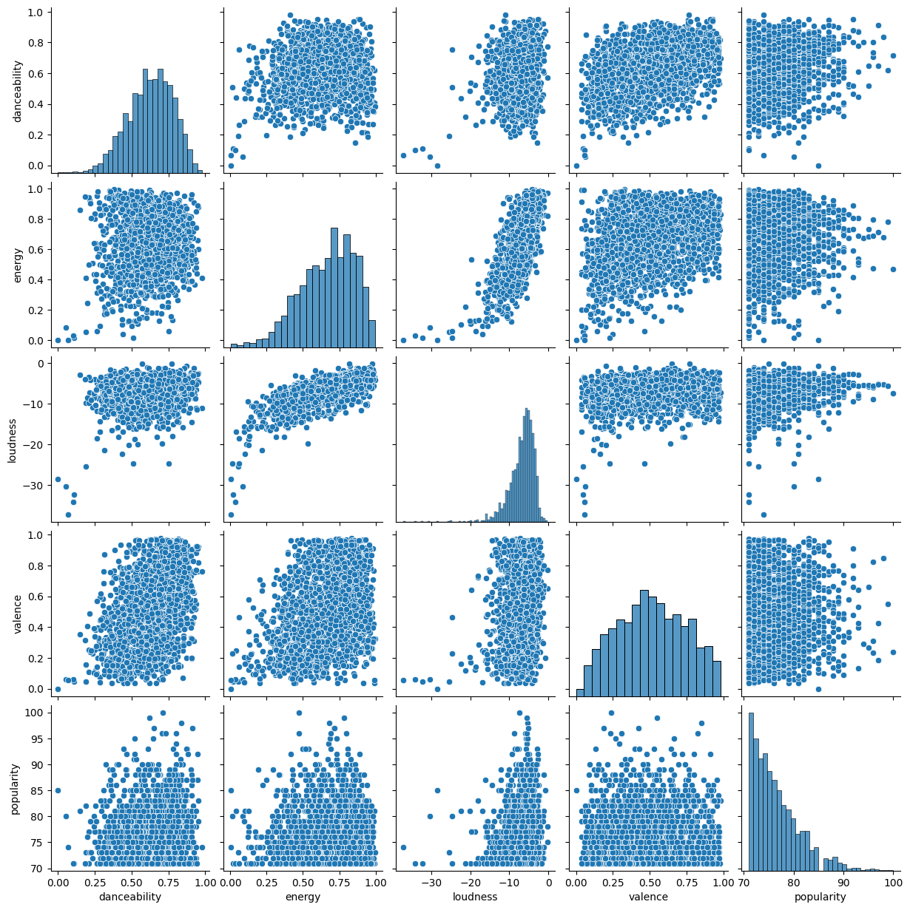
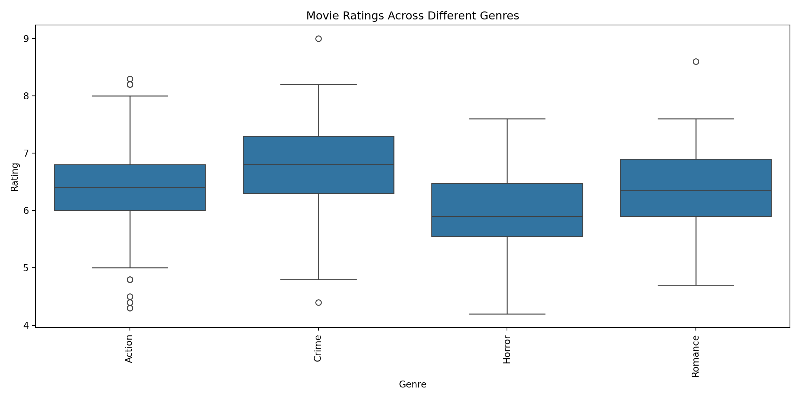

# Importing libraries/modules and aliasing them as needed
import pandas as pd
import numpy as np
import matplotlib.pyplot as plt
import seaborn as sns
import statsmodels.api as sm
from sklearn.model_selection import train_test_split
from sklearn.linear_model import LinearRegression
from sklearn.metrics import mean_squared_error, r2_scoreWalkthroughs and Exercises for Statistical Modeling and Inference with Python
Week 1
Walkthrough 1.1: Getting Started
Setting Up the Python Environment
If you haven’t already installed Python, Jupyter, and the necessary packages, there are instructions on the course repo in the README to do so here.
If you aren’t able to do this on your machine, you may want to check out Google Colab. It’s a free service that allows you to run Jupyter notebooks in the cloud.
Load a dataset
# Load in the dataset
spotify_sample = pd.read_csv("spotify_sample.csv")Prepare data
# Select a single feature and target variable
X = spotify_sample[['acousticness']]
y = spotify_sample['energy']
# Split the data into training and testing sets
X_train, X_test, y_train, y_test = train_test_split(X, y, test_size=0.2, random_state=2024)Train and use the model
# Create and train the model
model = LinearRegression()
model.fit(X_train, y_train)LinearRegression()In a Jupyter environment, please rerun this cell to show the HTML representation or trust the notebook.
On GitHub, the HTML representation is unable to render, please try loading this page with nbviewer.org.
LinearRegression()
# Make predictions
y_pred = model.predict(X_test)
# Evaluate the model
mse = mean_squared_error(y_test, y_pred)
r2 = r2_score(y_test, y_pred)
print(f"Mean Squared Error: {mse}")Mean Squared Error: 0.022725844170862916print(f"R^2 Score: {r2}")R^2 Score: 0.37411362686731486plt.clf()
# Plotting the results
plt.scatter(X_test, y_test, color='blue', label='Actual')
plt.plot(X_test, y_pred, color='red', linewidth=2, label='Predicted')
plt.xlabel('Acousticness')
plt.ylabel('Energy')
plt.title('Actual vs Predicted Energy')
plt.legend()
plt.show()Check if assumptions of linear regression met with visual tools
# Check for Homoscedasticity
residuals = y_test - y_pred
plt.figure(figsize=(10, 6))
plt.scatter(y_pred, residuals)
plt.axhline(y=0, color='r', linestyle='--')
plt.xlabel('Predicted Values')
plt.ylabel('Residuals')
plt.title('Residuals vs Predicted Values')
plt.show()# Check for Normality of Residuals
plt.figure(figsize=(10, 6))
sns.histplot(residuals, kde=True)
plt.xlabel('Residuals')
plt.title('Histogram of Residuals')
plt.show()
sm.qqplot(residuals, line='s')
plt.title('Q-Q Plot of Residuals')
plt.show()Exercise 1.1: Getting Started
Setting Up the Python Environment
If you ran the # Importing libraries and aliasing them code above, you should be good to proceed here. If not, scroll up and run it.
Load a dataset
# Load in the dataset
imdb_movie_sample = pd.read_csv("imdb_movie_sample.csv")Prepare data
# Select a single feature and target variable
X = imdb_movie_sample[['votes']]
y = imdb_movie_sample['rating']
# Split the data into training and testing sets
X_train, X_test, y_train, y_test = train_test_split(X, y, test_size=0.2, random_state=2024)Train and use the model
# Create and train the model
model = LinearRegression()
model.fit(X_train, y_train)LinearRegression()In a Jupyter environment, please rerun this cell to show the HTML representation or trust the notebook.
On GitHub, the HTML representation is unable to render, please try loading this page with nbviewer.org.
LinearRegression()
# Make predictions
y_pred = model.predict(X_test)
# Evaluate the model
mse = mean_squared_error(y_test, y_pred)
r2 = r2_score(y_test, y_pred)
print(f"Mean Squared Error: {mse}")Mean Squared Error: 0.4645267563432935print(f"R^2 Score: {r2}")R^2 Score: 0.34634313771445824# Plotting the results
plt.figure(figsize=(10, 6))
plt.scatter(X_test, y_test, color='blue', label='Actual')
plt.plot(X_test, y_pred, color='red', linewidth=2, label='Predicted')
plt.xlabel('Votes')
plt.ylabel('Rating')
plt.title('Actual vs Predicted Rating')
plt.legend()
plt.show()Check if assumptions of linear regression met with visual tools
# Check for Homoscedasticity
residuals = y_test - y_pred
plt.figure(figsize=(10, 6))
plt.scatter(y_pred, residuals)
plt.axhline(y=0, color='r', linestyle='--')
plt.xlabel('Predicted Values')
plt.ylabel('Residuals')
plt.title('Residuals vs Predicted Values')
plt.show()# Check for Normality of Residuals
plt.figure(figsize=(10, 6))
sns.histplot(residuals, kde=True)
plt.xlabel('Residuals')
plt.title('Histogram of Residuals')
plt.show()sm.qqplot(residuals, line='s')
plt.title('Q-Q Plot of Residuals')
plt.show()Walkthrough 1.2: Correlation
Correlation matrix
# Select only numeric columns
numeric_columns = spotify_sample.select_dtypes(include=[np.number])
# Calculate Pearson correlation matrix
correlation_matrix = numeric_columns.corr()
# Display the correlation matrix
correlation_matrix popularity duration_ms danceability energy key \
popularity 1.000000 -0.082278 0.127532 0.010058 -0.027631
duration_ms -0.082278 1.000000 -0.264755 0.008741 0.028283
danceability 0.127532 -0.264755 1.000000 0.079812 0.032541
energy 0.010058 0.008741 0.079812 1.000000 0.010671
key -0.027631 0.028283 0.032541 0.010671 1.000000
loudness 0.086216 -0.083199 0.222743 0.722339 0.009225
mode -0.035483 0.047103 -0.128635 -0.082894 -0.120635
speechiness 0.044336 -0.125077 0.229544 0.101975 0.067418
acousticness -0.066714 -0.047906 -0.092686 -0.634235 0.003188
instrumentalness -0.056118 0.028249 -0.169265 -0.149437 0.014540
liveness -0.008901 -0.015372 -0.064824 0.155328 -0.009253
valence -0.020808 -0.132867 0.418431 0.373744 0.007458
tempo -0.009479 -0.036287 -0.129809 0.149471 -0.011600
time_signature -0.006527 -0.056409 0.225751 0.209150 -0.024072
loudness mode speechiness acousticness \
popularity 0.086216 -0.035483 0.044336 -0.066714
duration_ms -0.083199 0.047103 -0.125077 -0.047906
danceability 0.222743 -0.128635 0.229544 -0.092686
energy 0.722339 -0.082894 0.101975 -0.634235
key 0.009225 -0.120635 0.067418 0.003188
loudness 1.000000 -0.094020 0.094559 -0.476257
mode -0.094020 1.000000 -0.064826 0.106039
speechiness 0.094559 -0.064826 1.000000 -0.052236
acousticness -0.476257 0.106039 -0.052236 1.000000
instrumentalness -0.340739 0.048699 -0.066858 0.125129
liveness 0.101894 0.007828 0.027345 -0.090550
valence 0.245695 -0.010206 0.104855 -0.203975
tempo 0.097394 -0.018432 0.132441 -0.129973
time_signature 0.230465 -0.056068 0.079879 -0.188187
instrumentalness liveness valence tempo \
popularity -0.056118 -0.008901 -0.020808 -0.009479
duration_ms 0.028249 -0.015372 -0.132867 -0.036287
danceability -0.169265 -0.064824 0.418431 -0.129809
energy -0.149437 0.155328 0.373744 0.149471
key 0.014540 -0.009253 0.007458 -0.011600
loudness -0.340739 0.101894 0.245695 0.097394
mode 0.048699 0.007828 -0.010206 -0.018432
speechiness -0.066858 0.027345 0.104855 0.132441
acousticness 0.125129 -0.090550 -0.203975 -0.129973
instrumentalness 1.000000 -0.042264 -0.155218 -0.035381
liveness -0.042264 1.000000 0.041816 0.030017
valence -0.155218 0.041816 1.000000 0.033820
tempo -0.035381 0.030017 0.033820 1.000000
time_signature -0.131703 0.018666 0.186840 -0.003579
time_signature
popularity -0.006527
duration_ms -0.056409
danceability 0.225751
energy 0.209150
key -0.024072
loudness 0.230465
mode -0.056068
speechiness 0.079879
acousticness -0.188187
instrumentalness -0.131703
liveness 0.018666
valence 0.186840
tempo -0.003579
time_signature 1.000000 Visualizing correlation matrix
# Visualize the correlation matrix using a heatmap
plt.figure(figsize=(12, 8))
sns.heatmap(correlation_matrix, annot=True, cmap='coolwarm', linewidths=0.5)
plt.title('Correlation Matrix Heatmap')
plt.show()Visualizing relationships
# Plot pairplot to visualize relationships
sns.pairplot(numeric_columns[['danceability', 'energy', 'loudness', 'valence', 'popularity']])
plt.suptitle('Pair Plot of Selected Features', y=1)
plt.show()Exercise 1.2: Correlation
Correlation matrix
# Select only numeric columns
numeric_columns = imdb_movie_sample.select_dtypes(include=[np.number])
# Calculate Pearson correlation matrix
correlation_matrix = numeric_columns.corr()
# Display the correlation matrix
correlation_matrix year runtime_in_minutes rating votes \
year 1.000000 -0.220021 -0.225679 0.083113
runtime_in_minutes -0.220021 1.000000 0.453850 0.305544
rating -0.225679 0.453850 1.000000 0.583459
votes 0.083113 0.305544 0.583459 1.000000
gross_in_dollars 0.008526 -0.003943 -0.049924 0.030079
gross_in_dollars
year 0.008526
runtime_in_minutes -0.003943
rating -0.049924
votes 0.030079
gross_in_dollars 1.000000 Visualizing correlation matrix
# Visualize the correlation matrix using a heatmap
plt.figure(figsize=(12, 8))
sns.heatmap(correlation_matrix, annot=True, cmap='coolwarm', linewidths=0.5)
plt.title('Correlation Matrix Heatmap')
plt.show()Visualizing relationships
# Plot pairplot to visualize relationships of
# runtime_in_minutes, rating, votes, and gross_in_dollars
sns.pairplot(numeric_columns[['runtime_in_minutes', 'rating', 'votes', 'gross_in_dollars']])plt.suptitle('Pair Plot of Selected Features', y=1)
plt.show()Walkthrough 1.3: Multiple Regression
# Prepare the data for multiple regression
X = spotify_sample[['danceability', 'energy', 'loudness']]
y = spotify_sample['popularity']
# Add a constant to the predictor variable set
X = sm.add_constant(X)
# Fit the multiple regression model
model = sm.OLS(y, X).fit()
# Print the model summary
model.summary()| Dep. Variable: | popularity | R-squared: | 0.024 |
| Model: | OLS | Adj. R-squared: | 0.022 |
| Method: | Least Squares | F-statistic: | 16.35 |
| Date: | Mon, 08 Jul 2024 | Prob (F-statistic): | 1.70e-10 |
| Time: | 12:43:54 | Log-Likelihood: | -6062.2 |
| No. Observations: | 2024 | AIC: | 1.213e+04 |
| Df Residuals: | 2020 | BIC: | 1.215e+04 |
| Df Model: | 3 | ||
| Covariance Type: | nonrobust |
| coef | std err | t | P>|t| | [0.025 | 0.975] | |
| const | 77.1758 | 1.009 | 76.516 | 0.000 | 75.198 | 79.154 |
| danceability | 3.4069 | 0.729 | 4.675 | 0.000 | 1.978 | 4.836 |
| energy | -2.3508 | 0.826 | -2.848 | 0.004 | -3.970 | -0.732 |
| loudness | 0.1914 | 0.049 | 3.922 | 0.000 | 0.096 | 0.287 |
| Omnibus: | 360.167 | Durbin-Watson: | 1.977 |
| Prob(Omnibus): | 0.000 | Jarque-Bera (JB): | 608.950 |
| Skew: | 1.152 | Prob(JB): | 5.86e-133 |
| Kurtosis: | 4.383 | Cond. No. | 91.3 |
Notes:
[1] Standard Errors assume that the covariance matrix of the errors is correctly specified.
Exercise 1.3: Multiple Regression
# Prepare the data for multiple regression choosing runtime_in_minutes, votes,
# and gross_in_dollars as predictors and rating as the target variable
X = imdb_movie_sample[['runtime_in_minutes', 'votes', 'gross_in_dollars']]
y = imdb_movie_sample['rating']
# Add a constant to the predictor variable set
X = sm.add_constant(X)
# Fit the multiple regression model
model = sm.OLS(y, X).fit()
# Print the model summary
model.summary()| Dep. Variable: | rating | R-squared: | 0.428 |
| Model: | OLS | Adj. R-squared: | 0.425 |
| Method: | Least Squares | F-statistic: | 150.8 |
| Date: | Mon, 08 Jul 2024 | Prob (F-statistic): | 6.20e-73 |
| Time: | 12:43:54 | Log-Likelihood: | -585.07 |
| No. Observations: | 608 | AIC: | 1178. |
| Df Residuals: | 604 | BIC: | 1196. |
| Df Model: | 3 | ||
| Covariance Type: | nonrobust |
| coef | std err | t | P>|t| | [0.025 | 0.975] | |
| const | 5.0742 | 0.270 | 18.823 | 0.000 | 4.545 | 5.604 |
| runtime_in_minutes | 0.0134 | 0.001 | 9.377 | 0.000 | 0.011 | 0.016 |
| votes | 2.551e-06 | 1.67e-07 | 15.242 | 0.000 | 2.22e-06 | 2.88e-06 |
| gross_in_dollars | -7.485e-09 | 3.63e-09 | -2.064 | 0.039 | -1.46e-08 | -3.64e-10 |
| Omnibus: | 8.416 | Durbin-Watson: | 1.651 |
| Prob(Omnibus): | 0.015 | Jarque-Bera (JB): | 8.596 |
| Skew: | -0.290 | Prob(JB): | 0.0136 |
| Kurtosis: | 2.947 | Cond. No. | 6.38e+08 |
Notes:
[1] Standard Errors assume that the covariance matrix of the errors is correctly specified.
[2] The condition number is large, 6.38e+08. This might indicate that there are
strong multicollinearity or other numerical problems.
Walkthrough 1.4: Logistic Regression
# Define the predictors and response
X = spotify_sample[['danceability', 'energy', 'loudness']]
y = (spotify_sample['popularity'] > 75).astype(int) # Binary outcome
# Add a constant to the model (intercept)
X = sm.add_constant(X)
# Fit the logistic regression model
model = sm.Logit(y, X).fit()Optimization terminated successfully.
Current function value: 0.684671
Iterations 5# Print the summary
model.summary()| Dep. Variable: | popularity | No. Observations: | 2024 |
| Model: | Logit | Df Residuals: | 2020 |
| Method: | MLE | Df Model: | 3 |
| Date: | Mon, 08 Jul 2024 | Pseudo R-squ.: | 0.01133 |
| Time: | 12:43:54 | Log-Likelihood: | -1385.8 |
| converged: | True | LL-Null: | -1401.6 |
| Covariance Type: | nonrobust | LLR p-value: | 5.908e-07 |
| coef | std err | z | P>|z| | [0.025 | 0.975] | |
| const | 0.0700 | 0.425 | 0.165 | 0.869 | -0.763 | 0.903 |
| danceability | 1.2074 | 0.306 | 3.946 | 0.000 | 0.608 | 1.807 |
| energy | -0.7250 | 0.348 | -2.083 | 0.037 | -1.407 | -0.043 |
| loudness | 0.0626 | 0.021 | 2.925 | 0.003 | 0.021 | 0.104 |
# Predict probabilities
spotify_sample['predicted_prob'] = model.predict(X)
# Plot the predicted probabilities
plt.figure(figsize=(10, 6))
sns.histplot(spotify_sample['predicted_prob'], bins=20, kde=True)
plt.title('Predicted Probabilities of High Popularity')
plt.xlabel('Predicted Probability')
plt.ylabel('Frequency')
plt.show()Exercise 1.4: Logistic Regression
# Define the predictors (runtime_in_minutes & votes) and response (rating > 7)
X = imdb_movie_sample[['runtime_in_minutes', 'votes']]
y = (imdb_movie_sample['rating'] > 7).astype(int) # Binary outcome
# Add a constant to the model (intercept)
X = sm.add_constant(X)
# Fit the logistic regression model
model = sm.Logit(y, X).fit()Optimization terminated successfully.
Current function value: 0.374605
Iterations 7# Print the summary
model.summary()| Dep. Variable: | rating | No. Observations: | 608 |
| Model: | Logit | Df Residuals: | 605 |
| Method: | MLE | Df Model: | 2 |
| Date: | Mon, 08 Jul 2024 | Pseudo R-squ.: | 0.3317 |
| Time: | 12:43:55 | Log-Likelihood: | -227.76 |
| converged: | True | LL-Null: | -340.80 |
| Covariance Type: | nonrobust | LLR p-value: | 8.105e-50 |
| coef | std err | z | P>|z| | [0.025 | 0.975] | |
| const | -7.6110 | 0.835 | -9.117 | 0.000 | -9.247 | -5.975 |
| runtime_in_minutes | 0.0412 | 0.007 | 6.047 | 0.000 | 0.028 | 0.055 |
| votes | 1.138e-05 | 1.26e-06 | 8.996 | 0.000 | 8.9e-06 | 1.39e-05 |
# Predict probabilities
imdb_movie_sample['predicted_prob'] = model.predict(X)
# Plot the predicted probabilities
plt.figure(figsize=(10, 6))
sns.histplot(imdb_movie_sample['predicted_prob'], bins=20, kde=True)
plt.title('Predicted Probabilities of High Rating')
plt.xlabel('Predicted Probability')
plt.ylabel('Frequency')
plt.show()Walkthrough 1.5: ANOVA
One-way ANOVA
from statsmodels.formula.api import ols
# Choose some genres to compare
genres = ['pop', 'rock', 'hip-hop', 'jazz']
# Subset the data to focus only on these genres
spotify_sample_subset = spotify_sample[spotify_sample['track_genre'].isin(genres)]
# Perform one-way ANOVA analyzing energy across different genres
model = ols('energy ~ C(track_genre)', data=spotify_sample_subset).fit()
anova_table = sm.stats.anova_lm(model, typ=2)
anova_table sum_sq df F PR(>F)
C(track_genre) 0.693407 3.0 9.11268 0.000011
Residual 5.275748 208.0 NaN NaNBoxplot across groups
# Boxplot for visualization
plt.figure(figsize=(12, 6))
sns.boxplot(x='track_genre', y='energy', data=spotify_sample_subset)
plt.title('Energy Levels Across Different Genres')
plt.xlabel('Track Genre')
plt.ylabel('Energy')
plt.xticks(rotation=90)([0, 1, 2, 3], [Text(0, 0, 'hip-hop'), Text(1, 0, 'pop'), Text(2, 0, 'rock'), Text(3, 0, 'jazz')])# Adjust layout to prevent labels from being cut off
plt.tight_layout()
# Show the plot
plt.show()Two-way ANOVA
# Perform two-way ANOVA analyzing energy across genres and explicit content
model = ols('energy ~ C(track_genre) * C(explicit)', data=spotify_sample_subset).fit()
anova_table = sm.stats.anova_lm(model, typ=2)
print(anova_table) sum_sq df F PR(>F)
C(track_genre) 0.432899 3.0 5.634451 0.004148
C(explicit) 0.022365 1.0 0.873272 0.351151
C(track_genre):C(explicit) 0.036156 3.0 0.470592 0.625305
Residual 5.250099 205.0 NaN NaNBoxplot across groups with color added
# Boxplot for visualization
plt.figure(figsize=(12, 6))
sns.boxplot(x='track_genre', y='energy', hue='key', data=spotify_sample_subset)
plt.title('Energy Levels Across Genres and Explicit Content')
plt.xlabel('Track Genre')
plt.ylabel('Energy')
plt.xticks(rotation=90)([0, 1, 2, 3], [Text(0, 0, 'hip-hop'), Text(1, 0, 'pop'), Text(2, 0, 'rock'), Text(3, 0, 'jazz')])plt.legend(title='Explicit')
plt.tight_layout()
plt.show()Exercise 1.5: ANOVA
One-way ANOVA
# Choose some genres to compare ('Action', 'Crime', 'Horror', 'Romance')
movie_genres = ['Action', 'Crime', 'Horror', 'Romance']
# Subset the data to focus only on these genres
imdb_movie_sample_subset = imdb_movie_sample[imdb_movie_sample['genre'].isin(movie_genres)]
# Perform one-way ANOVA analyzing rating across different genres
model = ols('rating ~ C(genre)', data=imdb_movie_sample_subset).fit()
anova_table = sm.stats.anova_lm(model, typ=2)
print(anova_table) sum_sq df F PR(>F)
C(genre) 14.823218 3.0 8.504215 0.000018
Residual 221.366548 381.0 NaN NaNBoxplot across groups
# Boxplot for visualization
plt.figure(figsize=(12, 6))
sns.boxplot(x='genre', y='rating', data=imdb_movie_sample_subset)
plt.title('Movie Ratings Across Different Genres')
plt.xlabel('Genre')
plt.ylabel('Rating')
plt.xticks(rotation=90)([0, 1, 2, 3], [Text(0, 0, 'Action'), Text(1, 0, 'Crime'), Text(2, 0, 'Horror'), Text(3, 0, 'Romance')])plt.tight_layout()
plt.show()
Two-way ANOVA
# Perform two-way ANOVA analyzing rating across genres and decades
model = ols('rating ~ C(genre) * C(decade)', data=imdb_movie_sample_subset).fit()
anova_table = sm.stats.anova_lm(model, typ=2)
print(anova_table) sum_sq df F PR(>F)
C(genre) -3.144089e-13 3.0 -1.877730e-13 1.000000
C(decade) 1.607196e+01 6.0 4.799294e+00 0.000877
C(genre):C(decade) 2.640044e+01 18.0 2.627837e+00 0.000877
Residual 2.026035e+02 363.0 NaN NaNBoxplot across groups with color added
# Some customization here to get the decades to appear in the appropriate order
# Define the ordered categories
decades = ['1940s', '1950s', '1960s', '1970s', '1980s', '1990s', '2000s', '2010s', '2020s']
# Convert 'decade' column to a categorical type with ordered categories
imdb_movie_sample_subset['decade'] = pd.Categorical(imdb_movie_sample_subset['decade'], categories=decades, ordered=True)
# Boxplot for visualization
plt.figure(figsize=(12, 6))
sns.boxplot(x='genre', y='rating', hue='decade', data=imdb_movie_sample_subset)
plt.title('Movie Ratings Across Genres and Decades')
plt.xlabel('Genre')
plt.ylabel('Rating')
plt.xticks(rotation=90)([0, 1, 2, 3], [Text(0, 0, 'Action'), Text(1, 0, 'Crime'), Text(2, 0, 'Horror'), Text(3, 0, 'Romance')])plt.legend(title='Decade')
plt.tight_layout()
plt.show()Walkthrough 2.1: Kruskal-Wallis and Mann-Whitney U Tests
Kruskal-Wallis
import scipy.stats as stats
# Perform Kruskal-Wallis Test on 'danceability' grouped by 'track_genre'
grouped_data = [group["danceability"].values for name, group in spotify_sample.groupby("track_genre")]
stat, p_value = stats.kruskal(*grouped_data)
print(f"Kruskal-Wallis Test Statistic: {stat}")Kruskal-Wallis Test Statistic: 716.1550864769308print(f"P-value: {p_value}")P-value: 8.079896027452026e-106Mann-Whitney U
# Perform Mann-Whitney U Test on 'energy' for pop versus rock
group1 = spotify_sample[spotify_sample["track_genre"] == "pop"]["energy"]
group2 = spotify_sample[spotify_sample["track_genre"] == "rock"]["energy"]
stat, p_value = stats.mannwhitneyu(group1, group2)
print(f"Mann-Whitney U Test Statistic: {stat}")Mann-Whitney U Test Statistic: 1331.5print(f"P-value: {p_value}")P-value: 0.006209251182150305Exercise 2.1: Kruskal-Wallis and Mann-Whitney U Tests
Kruskal-Wallis
# Perform Kruskal-Wallis Test on 'rating' grouped by 'decade'
grouped_data = [group["rating"].values for name, group in imdb_movie_sample.groupby("decade")]
stat, p_value = stats.kruskal(*grouped_data)
print(f"Kruskal-Wallis Test Statistic: {stat}")Kruskal-Wallis Test Statistic: 36.74748438743329print(f"P-value: {p_value}")P-value: 1.2807086053814844e-05Mann-Whitney U
# Perform Mann-Whitney U Test on 'gross_in_dollars' for 1990s versus 2000s
group1 = imdb_movie_sample[imdb_movie_sample["decade"] == "1990s"]["gross_in_dollars"]
group2 = imdb_movie_sample[imdb_movie_sample["decade"] == "2000s"]["gross_in_dollars"]
stat, p_value = stats.mannwhitneyu(group1, group2)
print(f"Mann-Whitney U Test Statistic: {stat}")Mann-Whitney U Test Statistic: 12435.0print(f"P-value: {p_value}")P-value: 0.12806672731387905Walkthrough 2.2: Correlation and Regression Non-parametrics
Spearman’s Rank Correlation
from scipy.stats import spearmanr, kendalltau
from sklearn.linear_model import TheilSenRegressor
# Filter numeric columns
numeric_columns = spotify_sample.select_dtypes(include=[np.number])
# Calculate Spearman's rank correlation matrix
spearman_corr = numeric_columns.corr(method='spearman')
spearman_corr popularity duration_ms danceability energy key \
popularity 1.000000 -0.072440 0.129702 -0.000777 -0.017574
duration_ms -0.072440 1.000000 -0.251642 0.001175 0.028208
danceability 0.129702 -0.251642 1.000000 0.015195 0.033048
energy -0.000777 0.001175 0.015195 1.000000 0.015045
key -0.017574 0.028208 0.033048 0.015045 1.000000
loudness 0.079969 -0.091340 0.161656 0.705323 0.001061
mode -0.036864 0.048248 -0.130943 -0.066520 -0.115759
speechiness 0.067139 -0.219369 0.275632 0.264828 0.059773
acousticness -0.040039 -0.048085 0.041988 -0.577759 0.012020
instrumentalness -0.042328 0.124608 -0.120121 -0.045534 0.015968
liveness -0.014915 -0.047246 -0.094423 0.125114 -0.008434
valence -0.007438 -0.130637 0.407722 0.354140 0.008871
tempo -0.023268 -0.030098 -0.116877 0.146536 -0.014145
time_signature 0.004075 -0.052245 0.183576 0.167934 -0.019123
predicted_prob 0.155566 -0.266268 0.857728 -0.016428 0.023484
loudness mode speechiness acousticness \
popularity 0.079969 -0.036864 0.067139 -0.040039
duration_ms -0.091340 0.048248 -0.219369 -0.048085
danceability 0.161656 -0.130943 0.275632 0.041988
energy 0.705323 -0.066520 0.264828 -0.577759
key 0.001061 -0.115759 0.059773 0.012020
loudness 1.000000 -0.086874 0.250565 -0.405347
mode -0.086874 1.000000 -0.108703 0.059074
speechiness 0.250565 -0.108703 1.000000 -0.118739
acousticness -0.405347 0.059074 -0.118739 1.000000
instrumentalness -0.248532 0.008641 -0.116679 -0.052700
liveness 0.083993 -0.005600 0.035930 -0.056561
valence 0.246618 -0.007641 0.154595 -0.117872
tempo 0.077476 -0.025288 0.111877 -0.143031
time_signature 0.137514 -0.063074 0.145527 -0.136193
predicted_prob 0.429840 -0.121558 0.240529 0.052559
instrumentalness liveness valence tempo \
popularity -0.042328 -0.014915 -0.007438 -0.023268
duration_ms 0.124608 -0.047246 -0.130637 -0.030098
danceability -0.120121 -0.094423 0.407722 -0.116877
energy -0.045534 0.125114 0.354140 0.146536
key 0.015968 -0.008434 0.008871 -0.014145
loudness -0.248532 0.083993 0.246618 0.077476
mode 0.008641 -0.005600 -0.007641 -0.025288
speechiness -0.116679 0.035930 0.154595 0.111877
acousticness -0.052700 -0.056561 -0.117872 -0.143031
instrumentalness 1.000000 -0.030663 -0.143458 -0.009493
liveness -0.030663 1.000000 -0.002867 0.034190
valence -0.143458 -0.002867 1.000000 0.024453
tempo -0.009493 0.034190 0.024453 1.000000
time_signature -0.050581 -0.016750 0.191808 -0.031372
predicted_prob -0.268459 -0.073083 0.282202 -0.113750
time_signature predicted_prob
popularity 0.004075 0.155566
duration_ms -0.052245 -0.266268
danceability 0.183576 0.857728
energy 0.167934 -0.016428
key -0.019123 0.023484
loudness 0.137514 0.429840
mode -0.063074 -0.121558
speechiness 0.145527 0.240529
acousticness -0.136193 0.052559
instrumentalness -0.050581 -0.268459
liveness -0.016750 -0.073083
valence 0.191808 0.282202
tempo -0.031372 -0.113750
time_signature 1.000000 0.142386
predicted_prob 0.142386 1.000000 # Heatmap for Spearman's rank correlation matrix
plt.figure(figsize=(10, 8))
sns.heatmap(spearman_corr, annot=True, cmap='coolwarm', linewidths=0.5, fmt=".2f")
plt.title('Spearman Rank Correlation Matrix')
plt.show()Kendall’s Tau Correlation
# Calculate Kendall's tau correlation matrix
kendall_corr = numeric_columns.corr(method='kendall')
kendall_corr popularity duration_ms danceability energy key \
popularity 1.000000 -0.050029 0.089937 -0.001031 -0.012721
duration_ms -0.050029 1.000000 -0.171749 0.000184 0.019532
danceability 0.089937 -0.171749 1.000000 0.007001 0.022862
energy -0.001031 0.000184 0.007001 1.000000 0.010588
key -0.012721 0.019532 0.022862 0.010588 1.000000
loudness 0.055104 -0.062390 0.108739 0.516982 0.000874
mode -0.031218 0.039405 -0.107039 -0.054367 -0.098538
speechiness 0.045994 -0.148979 0.184560 0.177247 0.041750
acousticness -0.027772 -0.032090 0.028822 -0.413812 0.007737
instrumentalness -0.030959 0.089508 -0.083348 -0.032286 0.012049
liveness -0.010382 -0.031026 -0.062175 0.083805 -0.006520
valence -0.005367 -0.087626 0.277557 0.240926 0.006148
tempo -0.016306 -0.020229 -0.081659 0.099982 -0.009866
time_signature 0.003466 -0.042543 0.149547 0.136852 -0.016224
predicted_prob 0.107440 -0.182719 0.677365 -0.014050 0.015950
loudness mode speechiness acousticness \
popularity 0.055104 -0.031218 0.045994 -0.027772
duration_ms -0.062390 0.039405 -0.148979 -0.032090
danceability 0.108739 -0.107039 0.184560 0.028822
energy 0.516982 -0.054367 0.177247 -0.413812
key 0.000874 -0.098538 0.041750 0.007737
loudness 1.000000 -0.070954 0.168990 -0.275321
mode -0.070954 1.000000 -0.088845 0.048260
speechiness 0.168990 -0.088845 1.000000 -0.076598
acousticness -0.275321 0.048260 -0.076598 1.000000
instrumentalness -0.176543 0.007502 -0.082904 -0.038446
liveness 0.057368 -0.004580 0.023238 -0.039836
valence 0.168376 -0.006244 0.102601 -0.077608
tempo 0.052432 -0.020653 0.077082 -0.095991
time_signature 0.112145 -0.062802 0.118550 -0.110729
predicted_prob 0.297044 -0.099277 0.159295 0.036444
instrumentalness liveness valence tempo \
popularity -0.030959 -0.010382 -0.005367 -0.016306
duration_ms 0.089508 -0.031026 -0.087626 -0.020229
danceability -0.083348 -0.062175 0.277557 -0.081659
energy -0.032286 0.083805 0.240926 0.099982
key 0.012049 -0.006520 0.006148 -0.009866
loudness -0.176543 0.057368 0.168376 0.052432
mode 0.007502 -0.004580 -0.006244 -0.020653
speechiness -0.082904 0.023238 0.102601 0.077082
acousticness -0.038446 -0.039836 -0.077608 -0.095991
instrumentalness 1.000000 -0.021291 -0.102345 -0.006678
liveness -0.021291 1.000000 -0.001103 0.022930
valence -0.102345 -0.001103 1.000000 0.017112
tempo -0.006678 0.022930 0.017112 1.000000
time_signature -0.043827 -0.013566 0.156093 -0.025496
predicted_prob -0.187537 -0.048962 0.190240 -0.079363
time_signature predicted_prob
popularity 0.003466 0.107440
duration_ms -0.042543 -0.182719
danceability 0.149547 0.677365
energy 0.136852 -0.014050
key -0.016224 0.015950
loudness 0.112145 0.297044
mode -0.062802 -0.099277
speechiness 0.118550 0.159295
acousticness -0.110729 0.036444
instrumentalness -0.043827 -0.187537
liveness -0.013566 -0.048962
valence 0.156093 0.190240
tempo -0.025496 -0.079363
time_signature 1.000000 0.115921
predicted_prob 0.115921 1.000000 # Heatmap for Kendall's tau correlation matrix
plt.figure(figsize=(10, 8))
sns.heatmap(kendall_corr, annot=True, cmap='coolwarm', linewidths=0.5, fmt=".2f")
plt.title('Kendall Tau Correlation Matrix')
plt.show()Theil-Sen Robust Regression
# Theil-Sen robust regression for 'danceability' and 'energy' predicting 'popularity'
X = numeric_columns[['danceability', 'energy']]
y = numeric_columns['popularity']
theil_sen = TheilSenRegressor()
theil_sen.fit(X, y)TheilSenRegressor()In a Jupyter environment, please rerun this cell to show the HTML representation or trust the notebook.
On GitHub, the HTML representation is unable to render, please try loading this page with nbviewer.org.
TheilSenRegressor()
print("Intercept:", theil_sen.intercept_)Intercept: 73.88294301051782print("Coefficients:", theil_sen.coef_)Coefficients: [ 2.74037999 -0.39896259]Exercise 2.2: Correlation and Regression Non-parametrics
Spearman’s Rank Correlation
# Filter numeric columns
numeric_columns = imdb_movie_sample.select_dtypes(include=[np.number])
# Calculate Spearman's rank correlation matrix
spearman_corr = numeric_columns.corr(method='spearman')
print(spearman_corr) year runtime_in_minutes rating votes \
year 1.000000 -0.142207 -0.188040 0.173011
runtime_in_minutes -0.142207 1.000000 0.409411 0.239625
rating -0.188040 0.409411 1.000000 0.536213
votes 0.173011 0.239625 0.536213 1.000000
gross_in_dollars 0.024127 -0.008311 -0.056719 0.019557
predicted_prob 0.039020 0.681691 0.613740 0.841861
gross_in_dollars predicted_prob
year 0.024127 0.039020
runtime_in_minutes -0.008311 0.681691
rating -0.056719 0.613740
votes 0.019557 0.841861
gross_in_dollars 1.000000 -0.002114
predicted_prob -0.002114 1.000000 # Heatmap for Spearman's rank correlation matrix
plt.figure(figsize=(10, 8))
sns.heatmap(spearman_corr, annot=True, cmap='coolwarm', linewidths=0.5)
plt.title('Spearman Rank Correlation Matrix')
plt.show()Kendall’s Tau Correlation
# Calculate Kendall's tau correlation matrix
kendall_corr = numeric_columns.corr(method='kendall')
print(kendall_corr) year runtime_in_minutes rating votes \
year 1.000000 -0.096414 -0.129581 0.122450
runtime_in_minutes -0.096414 1.000000 0.290252 0.163117
rating -0.129581 0.290252 1.000000 0.387086
votes 0.122450 0.163117 0.387086 1.000000
gross_in_dollars 0.015983 -0.005329 -0.038955 0.012762
predicted_prob 0.027403 0.503785 0.450431 0.662226
gross_in_dollars predicted_prob
year 0.015983 0.027403
runtime_in_minutes -0.005329 0.503785
rating -0.038955 0.450431
votes 0.012762 0.662226
gross_in_dollars 1.000000 -0.001268
predicted_prob -0.001268 1.000000 # Heatmap for Kendall's tau correlation matrix
plt.figure(figsize=(10, 8))
sns.heatmap(kendall_corr, annot=True, cmap='coolwarm', linewidths=0.5)
plt.title('Kendall Tau Correlation Matrix')
plt.show()Theil-Sen Robust Regression
# Theil-Sen robust regression for 'votes' and 'runtime_in_minutes' predicting 'rating'
X = numeric_columns[['votes', 'runtime_in_minutes']]
y = numeric_columns['rating']
theil_sen = TheilSenRegressor()
theil_sen.fit(X, y)TheilSenRegressor()In a Jupyter environment, please rerun this cell to show the HTML representation or trust the notebook.
On GitHub, the HTML representation is unable to render, please try loading this page with nbviewer.org.
TheilSenRegressor()
print("Intercept:", theil_sen.intercept_)Intercept: 4.426948382139033print("Coefficients:", theil_sen.coef_)Coefficients: [2.9888871e-06 1.4524426e-02]Walkthrough 2.3: Bootstrapping
# Function to perform bootstrapping
def bootstrap(data, n_bootstrap_samples=1000):
bootstrap_samples = []
for _ in range(n_bootstrap_samples):
resample = data.sample(frac=1, replace=True)
bootstrap_samples.append(resample.mean())
return bootstrap_samples
# Perform bootstrapping on the 'energy' column
bootstrap_means = bootstrap(spotify_sample['energy'])
# Plot the distribution of bootstrap means
plt.figure(figsize=(10, 6))
plt.hist(bootstrap_means, bins=30, edgecolor='k', alpha=0.7)
plt.title('Distribution of Bootstrap Means for Energy')
plt.xlabel('Mean Energy')
plt.ylabel('Frequency')
plt.show()Exercise 2.3: Bootstrapping
# Perform bootstrapping on the 'runtime_in_minutes' column
# using the bootstrap function defined above
bootstrap_means = bootstrap(imdb_movie_sample['runtime_in_minutes'])
# Plot the distribution of bootstrap means
plt.figure(figsize=(10, 6))
plt.hist(bootstrap_means, bins=30, edgecolor='k', alpha=0.7)
plt.title('Distribution of Bootstrap Means for Runtime')
plt.xlabel('Mean Runtime (minutes)')
plt.ylabel('Frequency')
plt.show()Walkthrough 2.4: Confidence Intervals
# Function to calculate bootstrap confidence intervals
def bootstrap_confidence_interval(data, n_bootstrap_samples=1000, confidence_level=0.95):
bootstrap_samples = []
for _ in range(n_bootstrap_samples):
resample = data.sample(frac=1, replace=True)
bootstrap_samples.append(resample.mean())
lower_bound = np.percentile(bootstrap_samples, (1 - confidence_level) / 2 * 100)
upper_bound = np.percentile(bootstrap_samples, (1 + confidence_level) / 2 * 100)
return lower_bound, upper_bound
# Calculate confidence intervals for the 'energy' column
lower, upper = bootstrap_confidence_interval(spotify_sample['energy'])
print(f"95% Confidence Interval for Mean Energy: [{lower}, {upper}]")95% Confidence Interval for Mean Energy: [0.655402741847826, 0.672080476284585]# Plot the distribution of bootstrap means and confidence interval
bootstrap_means = [spotify_sample['energy'].sample(frac=1, replace=True).mean() for _ in range(1000)]
plt.figure(figsize=(10, 6))
plt.hist(bootstrap_means, bins=30, edgecolor='k', alpha=0.7)
plt.axvline(lower, color='r', linestyle='--')
plt.axvline(upper, color='r', linestyle='--')
plt.title('Bootstrap Means and 95% Confidence Interval for Energy')
plt.xlabel('Mean Energy')
plt.ylabel('Frequency')
plt.show()Exercise 2.4: Confidence Intervals
# Calculate confidence intervals for the 'rating' column using the
# bootstrap_confidence_interval function defined above
lower, upper = bootstrap_confidence_interval(imdb_movie_sample['rating'])
print(f"95% Confidence Interval for Mean Rating: [{lower}, {upper}]")95% Confidence Interval for Mean Rating: [6.419062500000001, 6.550230263157895]# Plot the distribution of bootstrap means and confidence interval
bootstrap_means = [imdb_movie_sample['rating'].sample(frac=1, replace=True).mean() for _ in range(1000)]
plt.figure(figsize=(10, 6))
plt.hist(bootstrap_means, bins=30, edgecolor='k', alpha=0.7)
plt.axvline(lower, color='r', linestyle='--')
plt.axvline(upper, color='r', linestyle='--')
plt.title('Bootstrap Means and 95% Confidence Interval for Rating')
plt.xlabel('Mean Rating')
plt.ylabel('Frequency')
plt.show()Walkthrough 2.5: Real-World Scenarios for Bootstrapping
Music Industry Analytics
Objective: Analyzing song popularity and estimating population mean popularity.
Scenario: You are a data scientist for a movie production company. Your role is to analyze movie ratings and predict the average rating of movies produced. By using bootstrapping techniques, you aim to estimate the mean movie rating and its variability to understand the unknown population mean.
Bootstrapping Applications:
- Estimating Average Popularity: Use bootstrapping to calculate the mean and confidence intervals of the popularity scores.
- Assessing Variability: Determine the variability in the means of song popularity.
# Calculate bootstrap statistics for the 'popularity' column
# Function to calculate bootstrap statistics
def bootstrap_statistics(data, n_bootstrap_samples=1000):
bootstrap_means = []
for _ in range(n_bootstrap_samples):
resample = data.sample(frac=1, replace=True)
bootstrap_means.append(resample.mean())
return np.mean(bootstrap_means), np.std(bootstrap_means)
mean_popularity, std_popularity = bootstrap_statistics(spotify_sample['popularity'])
print(f"Bootstrapped Mean Popularity: {mean_popularity}")Bootstrapped Mean Popularity: 76.46607114624506print(f"Bootstrapped Std Dev Popularity: {std_popularity}")Bootstrapped Std Dev Popularity: 0.11290259576046315# Plot the distribution of bootstrap means
bootstrap_means = [spotify_sample['popularity'].sample(frac=1, replace=True).mean() for _ in range(1000)]
plt.figure(figsize=(10, 6))
plt.hist(bootstrap_means, bins=30, edgecolor='k', alpha=0.7)
plt.axvline(mean_popularity, color='r', linestyle='--')
plt.title('Bootstrap Means for Popularity')
plt.xlabel('Mean Popularity')
plt.ylabel('Frequency')
plt.show()Exercise 2.5: Real-World Scenarios for Bootstrapping
Film Industry Insights
Objective: Evaluating movie gross revenue and estimating population mean gross revenue.
Scenario: You are a data scientist for a movie production company. Your role is to analyze movie gross revenue and predict the average gross revenue of movies produced. By using bootstrapping techniques, you aim to estimate the mean gross revenue and its variability to understand the unknown population mean.
Bootstrapping Applications:
- Estimating Average Gross Revenue: Use bootstrapping to calculate the mean and confidence intervals of movie gross revenue.
- Assessing Variability: Determine the variability in the means of movie gross revenue.
# Calculate bootstrap statistics for the 'gross_in_dollars' column
# using the function called bootstrap_statistics defined above
mean_gross, std_gross = bootstrap_statistics(imdb_movie_sample['gross_in_dollars'])
print(f"Bootstrapped Mean Gross Revenue: {mean_gross}")Bootstrapped Mean Gross Revenue: 60579711.151526324print(f"Bootstrapped Std Dev Gross Revenue: {std_gross}")Bootstrapped Std Dev Gross Revenue: 285241.351528762# Plot the distribution of bootstrap means
bootstrap_means = [imdb_movie_sample['gross_in_dollars'].sample(frac=1, replace=True).mean() for _ in range(1000)]
plt.figure(figsize=(10, 6))
plt.hist(bootstrap_means, bins=30, edgecolor='k', alpha=0.7)
plt.axvline(mean_gross, color='r', linestyle='--')
plt.title('Bootstrap Means for Gross Revenue')
plt.xlabel('Mean Gross Revenue')
plt.ylabel('Frequency')
plt.show()